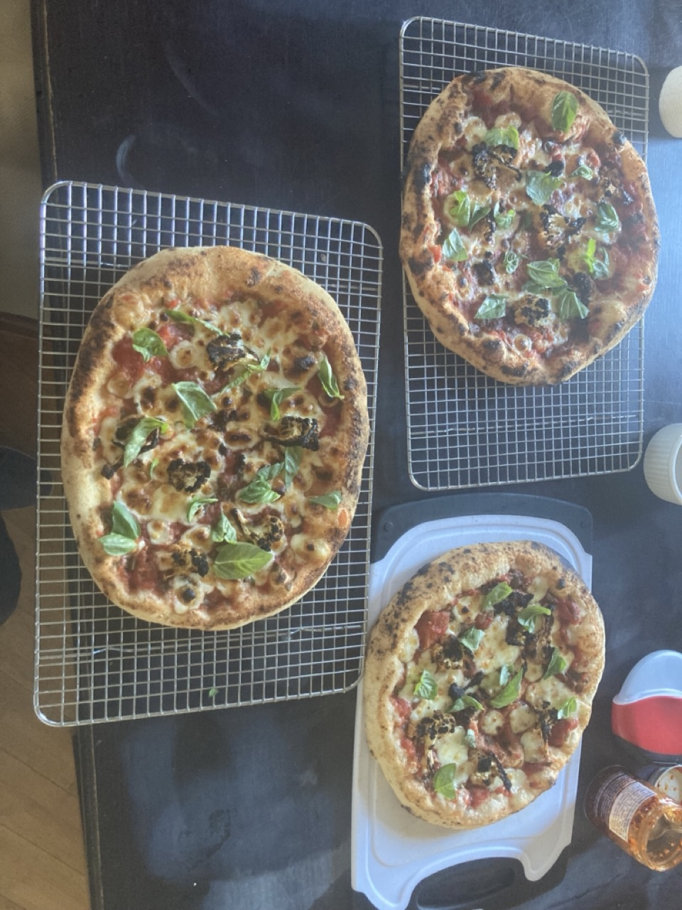
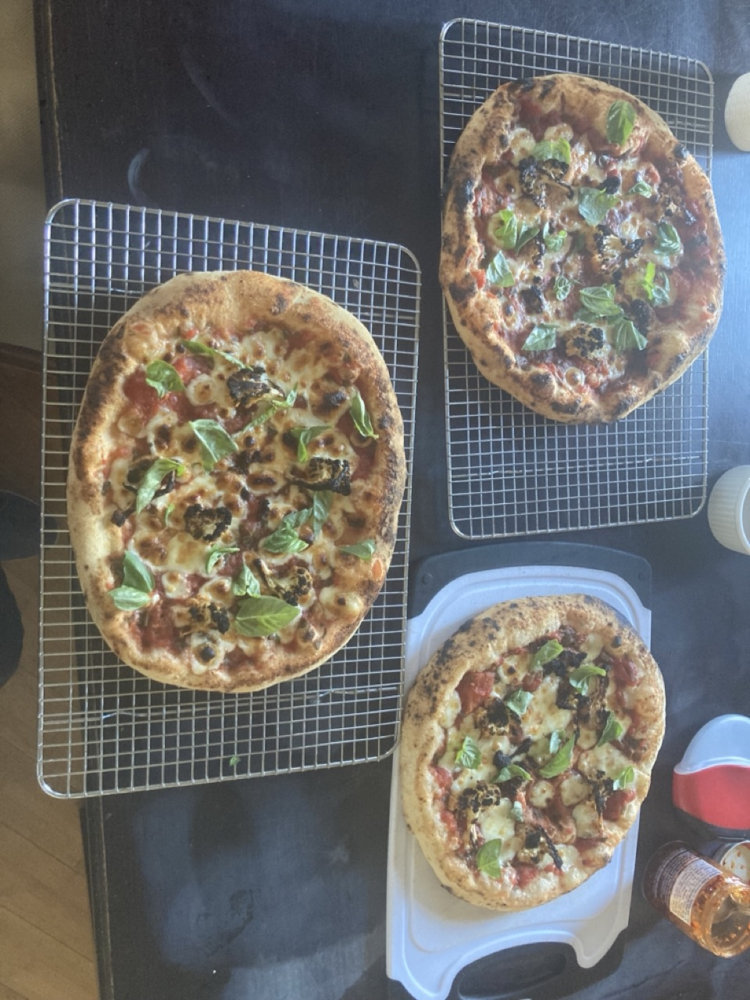
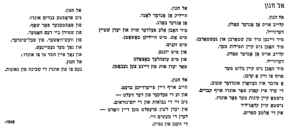
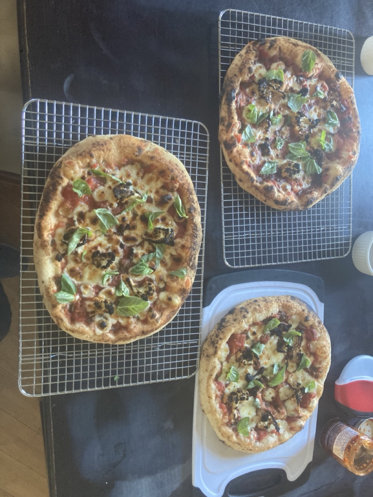

In 2024, I completed my PhD at the University of California, Santa Cruz under the supervision of Beren Sanders. Before coming to UC Santa Cruz I received my B.S. in Mathematics from the University of California, Santa Barbara, as well as a minor in Physics.
In my free time I like to:
